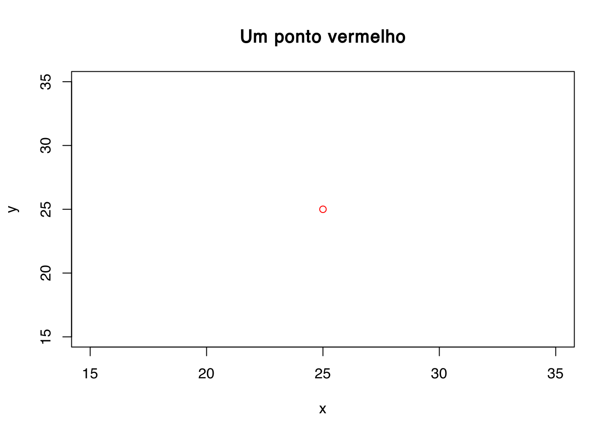

Capítulo 5 Programas de Computador
Atenção! Este capítulo está em fase de desenvolvimento. Visite a página do projeto se você tiver alguma sugestão, dúvida ou estiver disposto a colaborar. Sua opinião/ajuda é muito importante!
5.1 Introdução
A aplicação de métodos quantitativos – matemáticos e estatísticos – para o estudo da distribuição e gênese do solo se dá, fundamentalmente, pelo uso de computadores. Isso significa que necessitamos, obrigatoriamente, de programas de computador – software – especializados para tal tarefa. É por meio desses programa de computador que daremos instruções ao nosso computador para que ele desempenhe determinada tarefa quantitativa como, por exemplo, computar estatísticas descritivas de um conjunto de dados do solo ou produzir um gráfico relacionando uma variável dependente \(y\) com uma variável independente \(x\).
Os programas de computador disponíveis para o desenvolvimento de estudos quantitativos são inúmeros e diversos – fruto da diversidade de métodos quantitativos hoje existentes –, sendo geralmente necessário usar dois ou mais programa de computador para desenvolver qualquer estudo pedométrico – por mais simples que o estudo seja. Para aprender e potencialmente dominar o uso de qualquer programa de computador com aplicação pedométrica, possivelmente alguns dos quais ainda lhe são desconhecidos até então, será necessário que você aprenda a sua ‘linguagem’. Como sabemos, uma linguagem é um sistema de signos – símbolos ou palavras – convencionados que serve para a comunicação de conceitos, ideias, significados, pensamentos. Assim, a linguagem de um programa de computador qualquer será, também, um sistema de signos convencionados, mas que serve para a nossa comunicação com o computador.
A linguagem usada por um programa de computador geralmente é um tanto quanto complicada quando comparada à linguagem que nós, seres humanos, usamos para nos comunicar entre nós mesmos no dia a dia. Isso é tanto mais verdade quanto mais distante das chamadas Ciências Exatas for a nossa formação – como é o meu caso. É por isso que os programas de computador mais populares, que você provavelmente já usa, são aqueles que possuem o que chamamos de interface gráfica do usuário (GUI, do inglês graphical user interface). Essa interface nada mais é, como o próprio nome já diz, uma camada sobreposta à linguagem usada pelo programa de computador, uma camada intermediária entre a linguagem e o usuário, cuja função é tornar o programa de computador mais amigável para uso. Assim, a comunicação do usuário se dá, primeiro, via emissão de comandos pressionando botões e ícones ou escolhendo itens em caixas de diálogo, usando tanto o mouse como o teclado.
Apesar da amigabilidade dos programas de computador que usam uma interface gráfica, no longo prazo, seu uso pode se tornar um tanto quanto difícil. Isso porque é praticamente impossível memorizar a sequência de ícones pressionados e itens escolhidos em caixas de diálogo para realizar uma determinada tarefa pedométrica. Em geral, será preciso anotar todos os passos em um arquivo separado, muitas vezes incluindo imagens da própria interface gráfica e dos ícones pressionados. Se essa documentação não for feita, você corre o risco de, depois de algum tempo, não mais conseguir executar exatamente a mesma tarefa com seu conjunto de dados. Por exemplo, os revisores de um artigo que você submeteu para publicação exigem que você refaça um determinado passo de uma análise estatística que você usou para produzir uma das tabelas do seu artigo: doze meses depois da submissão, você já esqueceu, quase que completamente, como foi que você analisou aqueles dados. Esse problema é comumente conhecido como o problema da irreprodutibilidade.
A reprodutibilidade é uma característica de um experimento ou estudo. Ela correspondendo ao potencial que um experimento tem de ser reproduzido, tanto pelo mesmo pesquisador como por qualquer outro pesquisador trabalhando independentemente em qualquer lugar do planeta, constituindo um dos principais elementos do ideal científico. Logicamente, o problema da irreprodutibilidade de um estudo é muito mais difícil de superar quando outro pesquisador deseja reproduzir o experimento pedométrico que você conduziu e vice-versa. Em geral, além de uma extensiva descrição do material e dos métodos usados em um estudo pedométrico, a reprodutibilidade só se torna um fato quando a totalidade do ambiente computacional usado para realizar o estudo está livremente disponível. Grosso modo, isso inclui os dados – veja mais no próximo capítulo [Gestão de Dados] – e a sequência de comandos emitidos para comunicação com o computador.
A maneira mais eficiente de registrar a sequência de comandos emitidos para comunicação com o computador durante a realização de uma tarefa pedométrica requer o uso, diretamente, da linguagem do programa de computador, ou seja, uma linguagem de programação. Nesse caso, nossa comunicação com o computador se dá via uso de uma interface de linha de comando (CLI, do inglês command-line interface), ou seja, via emissão de comandos sob a forma de sucessivas linhas de texto, as chamadas linhas de comando. Sendo uma linguagem, toda linguagem de programação possui regras sintáticas e semânticas – uma gramática –, as quais devem ser estritamente respeitadas para que haja, efetivamente, comunicação entre nós e o computador. Dentre os programa de computador que veremos neste capítulo que usam uma interface de linha de comando, o principal deles é o R.
Além de potencializarem a reprodutibilidade, uma das grandes vantagens dos programas de computador que utilizam comandos de texto – ao invés de botões e caixas de diálogo – é o fato de permitirem ao usuário fazer adaptações metodológicas, desenvolver novos métodos e expandir sua caixa de ferramentas analíticas para além daquilo que já estiver implementado no programa de computador. Por outro lado, a grande desvantagem desses programas de computador é a maior dificuldade de aprendizagem e domínio do seu uso, geralmente necessitando grande esforço e persistência. Em outras palavras, diz-se que esses programas de computador possuem uma curva de aprendizagem – uma representação gráfica da aprendizagem ao longo do tempo – bastante inclinada, portanto difícil de superar (Figure 5.1).

Figure 5.1: Curva de aprendizagem hipotética de um programa de computador que utiliza comandos de texto e a produtividade relativa do usuário ao longo do tempo.
Usando alguns programas de computador tradicionais, populares, você tem conseguido desenvolver estudos bastante interessantes. Contudo, por algum motivo, você decide aprender a usar outro programa de computador, um programa de computador baseado na emissão de linhas de comando, a fim de aumentar sua produtividade e a qualidade de seus estudos. As primeiras experiências com o novo programa de computador serão difíceis e você se sentirá perdido, talvez desesperado. A tentação de abandonar aquele novo programa de computador aparecerá logo, e você se sentirá inclinado a voltar a usar apenas as mesmas ferramentas que usava antes. Talvez sua vontade “morra” ao longo do caminho. Contudo, você precisa resistir e acreditar que consegue vencer os perigos do Vale da Morte. Você precisa estar disposto a encarar a íngreme curva de aprendizagem. Depois de passar por tudo isso, sua produtividade (ou capacidade produtiva) deverá ser algumas ordens de magnitude maior do que antes de conhecer aquele novo programa de computador.
Note que a dificuldade na aprendizagem do uso de programas de computador baseados na emissão de linhas de comando não se deve à uma dificuldade inerente à esses programa de computador. Na verdade, nossa dificuldade advém, principalmente, do fato de, em geral, sermos introduzidos primeiro, ainda na nossa infância, à programa de computador que dispõe apenas de interfaces gráficas, com uma porção de ícones e caixas de diálogo – veja, por exemplo, seu smartphone.
Nesse ponto você já deve ter percebido que para desenvolver estudos pedométricos não basta aprender e dominar o uso de diversos softwares. Também é preciso aprender e dominar (pelo menos) uma nova linguagem, um novo sistema de signos. Adianto que, em geral, algumas das regras gramaticais dessas linguagens podem ser deduzidas a partir daquilo que já sabemos em função do uso de outros programas de computador de análise e processamento de dados. Contudo, como qualquer linguagem de programação, existem especificidades, boa parte das quais é preciso conhecer para termos sucesso em seu uso. Além disso, algum conhecimento da língua inglesa costuma ser necessário, haja vista que as linguagens de programação costumam ser construídas com base em palavras da língua inglesa. A ideia aqui é tentar fazer com que sua travessia pelo Vale da Morte seja a mais curta e menos dolorosa possível.
5.2 R & RStudio
O R é uma linguagem de programação e um ambiente de análises estatísticas e gráficas gratuito. Sua origem data de 1995, quando os pesquisadores Robert Gentleman e Ross Ihaka iniciaram o projeto de seu desenvolvimento no Departamento de Estatística da Universidade de Auckland na Nova Zelândia. Baseado na linguagem de programação e ambiente estatístico S, desenvolvido por John Chambers e colegas no Bell Laboratories, o nome R deriva das iniciais dos dois pesquisadores (R), mas também de uma brincadeira com o nome da linguagem e ambiente no qual foi baseado (S). Hoje o R é um software livre mantido e desenvolvido pelo R Core Team, disponível gratuitamente para qualquer interessado em utilizá-lo, modificá-lo e redistribuí-lo.
O R fornece uma ampla variedade de técnicas estatísticas, incluindo análises univariadas, bivariadas e multivariadas, desde as mais simples até as mais complexas, como análises descritivas, análise de variância e testes de médias, análise de agrupamento e de componentes principais, análise de séries temporais, modelagem geoestatísticas e muito, muito mais. O R ainda fornece uma série de ferramentas para produção de diversos tipos gráficos com qualidade para publicação. Todas essas técnicas e ferramentas, além de amplamente documentadas, são customizáveis e extensíveis. Assim, além de dispor das técnicas já incluídas no ambiente R, o usuário pode utilizar-se da linguagem R para criar suas próprias técnicas e, em seguida, torná-las disponíveis para uso pela comunidade científica na forma de pacotes.
A grande vantagem do R em relação aos demais programas de computador existentes para análises estatísticas e gráficas é o fato de ele aliar o enorme volume de técnicas de análise estatística e gráfica à completa gratuidade. Ao contrário do que alguns possam pensar, essa gratuidade não é sinônimo de baixa qualidade. Pelo contrário, é a gratuidade que permite que milhares de cientistas ao redor do mundo usem e verifiquem a qualidade dessas técnicas. São esses mesmos cientistas que ajudam a desenvolver o R mais e mais, disponibilizando grande parte de seu tempo de trabalho para elaborar a miríade de tutoriais e materiais de apoio para o R disponíveis atualmente – nenhum programa de computador comercial possui, seja em meio digital ou em meio impresso, um volume de material de apoio maior do que o R. Ao tornar-se uma linguagem comum entre os cientistas, o R ainda permite que o registro das rotinas analíticas possa ser compartilhado e, quando necessário, verificado ou disponibilizado para verificação por outros cientistas, possibilitando a observação daquele que vimos ser um dos principais ideias do método científico: a reprodutibilidade.
Em resumo, o R é completamente gratuito, pode ser usado para conduzir qualquer tipo de análise estatística e gráfica, é amplamente documentado, customizável e extensível, permite o compartilhamento e reprodução de rotinas analíticas, sendo uma linguagem comum entre cientistas de diferentes partes do mundo. Será que é preciso dizer mais alguma coisa?!
5.2.1 Instalação
Passemos agora à instalação do R em seu computador. Para isso precisamos, primeiro, visitar a página do projeto na Internet (Figura 5.2).
Figure 5.2: Janela de acesso à página inicial do projeto R na Internet.
Veja que uma grande quantidade de informa√ß√£o, muito al√©m do que se busca incluir neste cap√≠tulo, pode ser encontrada na página do projeto. Ali estão dispon√≠veis diversos manuais de uso (Documentation > Munuals), bem como livros (Documentation > Books) e artigos publicados na revista do projeto (Documentation > The R Journal). Há ainda uma página com respostas √†s perguntas mais frequentes (Documentation > FAQs) e uma página inteira explicando como √© poss√≠vel conseguir ajuda antes de recorrer diretamente a terceiros (Help With R > Getting Help). (Como a documenta√ß√£o do R √© extensa e a maioria dos colaboradores do projeto não são pagos pela colabora√ß√£o, recomendo que voc√™ sempre procure, primeiro, resolver qualquer d√∫vida sozinho üòÉ)
O procedimento de instalação do R depende do sistema operacional (OS, do inglês operating system) de seu computador:
- Linux: https://cloud.r-project.org/bin/linux/
- (Mac) OS X: https://cloud.r-project.org/bin/macosx/
- Windows: https://cloud.r-project.org/bin/windows/base/
A página referente √† cada OS possui as instru√ß√µes necessárias para descarregar e instalar o R em seu computador. Em geral, o processo de instala√ß√£o √© exatamente igual aquele de outros programas de computador que voc√™ usa em seu dia-a-dia. (Caso o R apresente problemas de funcionamento ap√≥s a instala√ß√£o, tente descarregar e instalar a versão anterior üòÉ)
Instalado o R, agora é a hora de instalar o RStudio. A última versão do instalador do RStudio para o seu OS pode ser descarregada do seguinte endereço:
Caso você queira instalar a mais nova versão do RStudio, ainda em estágio de teste, então descarregue o instalador do seguinte endereço:
Depois de instalados o R e o RStudio, inicie o RStudio em seu computador. Ele deve se parecer mais ou menos como na figura a seguir:
RStudio – ambiente de desenvolvimento integrado para R (em sua versão para Linux).
Você deve ter notado que o RStudio é composto por quatro grandes painéis retangulares, cada um contendo conteúdo específico. Grosso modo, o painel superior direito mostra informações diversas sobre a atual sessão de trabalho, sendo geralmente pouco utilizado. Já o painel inferior direito serve à visualização de gráficos e páginas de ajuda do R, o que o faz ser bastante utilizado. O painel superior esquerdo é aquele utilizado para a programação em R, ou seja, aquele onde as linhas de comando utilizadas para a análise dos dados são editadas. Esse painel é aquele onde creio que ocupamos a maior parte do tempo. Por fim, o painel inferior esquerdo corresponde à interface de linha de comando (CLI), o console do R. É ali que as linhas de comando editadas no painel superior esquerdo deve ser emitidas para que a “mágica” aconteça. Para isso você pode, no editor, posicionar o cursor sobre a linha de código fonte que deseja que seja emitida e pressionar, simultaneamente, as teclas Ctrl e Enter. Alternativamente, para emitir um bloco de linhas de comando, você deve selecioná-lo por completo e então pressionar as teclas Ctrl e Enter.
5.2.2 Primeiros passos
Agora é a hora de efetivamente interagir com o R. Façamos logo algumas operações matemáticas para nos familiarizarmos com ele. Você pode copiar e colar as linhas de comando abaixo no console do R.
# As quatro operações matemáticas básicas:
2+3 # soma## [1] 55 * 5 # multiplicação## [1] 2525/5 # divisão ## [1] 55 - 3 # subtração## [1] 2# Três operações matemáticas úteis:
2^2 # Potencia√ß√£o (ou exponencia√ß√£o)## [1] 4log(x = 4) # Fun√ß√£o logar√≠tmica## [1] 1.386294sqrt(x = 25) # Raiz quadrada## [1] 5Voc√™ deve ter notado que que os s√≠mbolos utilizados (+, *, / e -) são os mesmos encontrados em qualquer calculadora cient√≠fica. São tamb√©m os mesmos utilizados nas opera√ß√µes matemáticas de qualquer planilha eletr√¥nica de edi√ß√£o de dados. Isso significa que podemos deduzir algumas coisas sobre o funcionamento do R a partir daquilo que conhecemos de outros programas de computador dedicados √† análise e manipula√ß√£o de dados. Voc√™ tamb√©m deve ter observado que o espa√ßamento entre n√∫mero e operador matemático não tem qualquer import√¢ncia do ponto de vista da opera√ß√£o matemática. Contudo, do ponto de vista est√©tico ‚Äì para facilidade de leitura do c√≥digo fonte por humanos ‚Äì, costuma-se usar a formata√ß√£o com espa√ßos 2 + 3 ao inv√©s de 2+3. (A exce√ß√£o √© a opera√ß√£o de divisão, geralmente expressa na forma sem espa√ßos 2/3 üòÉ)
Outro detalhe importante nas linhas de comando acima é o uso do símbolo # para a inclusão de pequenos comentários sobre os comandos. Os comentários podem ser incluídos tanto em uma linha própria como na mesma linha após um comando – mas nunca antes de um comando. A inclusão de pequenos comentários no código fonte é fundamental para documentarmos os detalhes da atividade que estamos realizando a fim de que outros – e nós mesmos, algumas semanas ou meses mais tarde – possamos entender o propósito de cada uma daquelas linhas de comando.
Finalmente, você deve ter notado que as duas últimas operações matemáticas foram feitas usando um identificador – especificamente, uma “palavra” – seguido por dois parênteses contendo um valor numérico atribuído ao argumento x: log(x = 4) e sqrt(x = 25). Aqui, log() e sqrt() são funções do R, nesse caso as funções logarítmica e raiz quadrada, assim como sum() (soma), diff() (diferença), prod() (produto), entre outras. No R, uma função arbitrária chamada fun() sempre é usada da seguinte maneira: fun(x), onde x é um argumento qualquer (um número, por exemplo) tomado pela função para realizar uma determinada operação. Como exemplo final, tomemos uma função bastante conhecida entre cientistas do solo, a função que que representa a Lei Básica da Ciência do Solo,
\[solo = f(cl, o, r, p, t, \ldots)\]
onde \(cl\) representa o clima, \(o\) representa os organismos vivos, incluindo nós seres humanos, \(r\) significa relevo, \(p\) é o material parental, \(t\) representa o tempo e \(\ldots\) são fatores não conhecidos ou de limitada relevância. Em R, essa função seria escrita exatamente da mesma forma: solo = f(cl, o, r, p, t, ...). Vejamos mais um exemplo, agora de uma função que aceita vários argumentos:
plot(x = 25, y = 25, col = "red", main = "Um ponto vermelho", xlab = "x", ylab = "y")
5.2.3 Conceitos básicos
Passada a primeira impressão, agora precisamos nos familiarizar com alguns conceitos básicos para que possamos entender o R e utilizá-lo com êxito. Conforme destacado acima, o R não é um simples programa de computador para análises estatísticas, mas sim um ambiente de programação. E, para isso, precisamos de uma linguagem de programação, ou seja, a linguagem de programação R.
A gramática da linguagem de programação R possui dois elementos principais: as palavras reservadas e as palavras-chave. As palavras reservadas constituem signos com significado especial para a linguagem de programação, definidas internamente no código fonte, e que não podem ser utilizadas pelo usuário para fins outros que não aqueles especificados internamente pelo programa de computador (por exemplo, para identificar objetos e funções – veremos esses conceitos a seguir). Algumas das palavras reservadas do R são if, else, while, TRUE e FALSE. Note que no editor de código fonte do RStudio as palavras reservadas aparecem sempre destacadas em azul – busque pelo termo reserved no painel de ajuda do RStudio (painel inferior direito) para conhecer as palavras reservadas do R.
As palavras-chave são aquelas utilizadas para definir funções (e objetos, como veremos a seguir). As palavras-chave que definem funções são aquelas que acionam operações matemáticas e lógicas que possibilitam, por exemplo, a realização de uma determinada análise estatística de um determinado conjunto de dados – na verdade, tudo o que “acontece” no R acontece pela ação de uma função. As palavras-chave que definem funções podem já estar definidas na própria linguagem de programação – como log, sqrt e plot nos exemplos acima – ou ser criadas pelo usuário. Isso significa que o usuário pode criar suas próprias funções no R conforme sua necessidade. Vejamos um exemplo:
# A palavra-chave 'soma' é usada para definir uma função que computa
# e retorna como resultado `res` a soma de dois valores numéricos.
# A estrutura de uma função aparece, sempre, entre '{' e '}'.
soma <-
function (x, y) {
res <- x + y
return (res)
}
soma(x = 2, y = 2)## [1] 4Você deve ter notado que duas palavras reservadas foram usadas na construção da função soma(). São elas: function e return. Além disso, uma segunda palavra-chave foi usada: res. Essa palavra-chave foi usada para definir um objeto que armazena o resultado da operação matemática realizada usando o símbolo +. Assim, na verdade, a função soma() não retorna o resultado da operação matemática, mas sim um objeto que armazena o seu resultado. Grosso modo, um objeto nada mais é do que uma estrutura de dados – como diria John Chambers, tudo o que “existe” no R é um objeto. Essas estruturas de dados são vetores, matrizes, listas e outras estruturas de dados inseridas ou criadas pelo próprio usuário ou produzidas como resultado dos diversos procedimentos analíticos. Vejamos alguns exemplos para nos familiarizamos com o conceito de objeto.
Imagine dois vetores de dados \(x = [1, 2, 3, 4, 5]\) e \(y = [2, 4, 3, 5, 7]\). Esses vetores são inseridos no R e nomeados, respectivamente, como x e y. Então, x e y passam a ser palavras-chave que identificam dois objetos, ou seja, uma estrutura de dados, nesse caso, vetores. Ao emitirmos uma chamada dos objetos x e y, o R retorna os respectivos valores neles armazenados:
# Definindo dois objetos vetoriais
# Note que quando criamos uma sequência ordenada de valores podemos
# simplesmente usar o símbolo ':' entre o menor e o maior valor da
# sequência ao invés de declarar todos os seus valores.
x <- 1:5
y <- c(2, 4, 3, 5, 7)
x## [1] 1 2 3 4 5y## [1] 2 4 3 5 7Suponha agora que estamos interessados na construção de um modelo de regressão linear, para a qual usamos a função lm() (do inglês linear model), do vetor \(y\) em função do vetor \(x\):
# Calibração de um modelo de regressão linear
# Note que é possível usar simbolos como '.' e '_' na construção de
# uma palavra-chave identificadora de objeto (ou função).
meu.modelo_linear <- lm(y ~ x)
meu.modelo_linear##
## Call:
## lm(formula = y ~ x)
##
## Coefficients:
## (Intercept) x
## 0.9 1.1Nesse exemplo, o objeto identificado pela palavra-chave meu.modelo_linear constitui uma estrutura de dados que contém todas as especificações do modelo de regressão linear de \(y\) em função de \(x\). Ao emitirmos uma chamada ao objeto meu.modelo_linear o R retorna os coeficientes do modelo de regressão linear calibrado. Se você quiser conhecer mais sobre a estrutura do objeto meu.modelo_linear, use o seguinte comando: str(meu.modelo_linear). Como sugestão, use também os comandos anova(meu.modelo_linear), summary(meu.modelo_linear) e plot(meu.modelo_linear).
Você deve ter notado nos exemplos acima que a atribuição de uma palavra-chave à um objeto ou à uma função está sempre atrelada ao uso do símbolo <-. Por exemplo, x <- 1:5 atribui a palavra-chave x ao objeto de estrutura vetorial contendo valores numéricos de 1 até 5. A atribuição também pode ser feita usando o símbolo =. Contudo, como = também pode ser usado em contextos outros que não a atribuição de palavras-chave, o uso de <- costuma ser preferido.
5.2.4 Os pacotes
A instalação básica do R oferece uma série de ferramentas para análises estatísticas e gráficas. Essas ferramentas são organizadas em pacotes. Um pacote constitui uma coleção de arquivos e diretórios que contém as regras sintáticas e semânticas que definem determinadas operações matemáticas e lógicas. Cada pacote possui um nome específico e ficam armazenados no diretório de instalação do R. São exemplos os pacotes base e stats.
Conforme dito acima, o R oferece uma infinidade de ferramentas para análises estatísticas e gráficas desenvolvidas por cientistas ao redor de todo o mundo. Contudo, essas ferramentas não estão disponíveis na instalação básica do R. Para ter acesso a essas ferramentas você precisa instalar novos pacotes, ou seja, novas coleções de arquivos e diretórios que contém regras sintáticas e semânticas que definem operações matemáticas e lógicas. No caso da análise de dados espaciais (geográficos), o pacote mais importante é o sp. Para análises geoestatísticas temos, entre outros, os pacotes gstat e geoR. Já os pacotes spcosa e spsann prestam-se à amostragem espacial. A seguir você tem uma visão da lista de pacotes disponíveis para o R.
Existem duas maneiras principais para instalar um novo pacote. Primeiro, você pode ir até o painel inferior direito do RStudio e escolher Packages > Install. Na caixa de diálogo que aparecerá, você insere o nome do pacote que quiser instalar – você também pode inserir o nome de vários pacotes separados por um espaço. Definido o pacote, basta pressionar Install. A outra maneira é usando uma linha de comando como segue:
# Instalando novos pacotes no R.
# Procure na ajuda da função 'install.packages' pelo significado
# do argumento 'dependencies'.
install.packages(
c("sp", "raster", "rgdal", "pedometrics", "randomForest", "rsaga"), dependencies = TRUE)Pronto! Agora você terá a sua disposição também as funcionalidades incluídas nesses pacotes.
5.2.5 Ferramentas avançadas
O tidyverse é uma coleção de pacotes desenvolvidos principalmente pela equipe do RStudio. Esses pacotes visam fornecer as ferramentas necessárias para realizar a maioria das tarefas básicas executadas no processo de análise de dados (leitura, limpeza, manipulação e exportação de dados, produção de gráficos, entre outros).
Uma das maiores contribuições do tidyverse é o operador %>%, chamado tubo ou cano, em inglês pipe, provida pelo pacote magrittr. Operacionalmente, um tubo serve para estabelecer a comunicação direta entre dois processos, representando assim algo que possui uma “entrada”, um “caminho” e uma “saída”. Essa “entrada” representa, por exemplo, o produto de uma função qualquer, o qual é encaminhado diretamente, sem a necessidade de “paradas”, pelo operador para uma segunda função, que então produz um produto final na “saída”. Vejamos um exemplo para que você entenda a utilidade de um tubo.
Suponha que você queira fazer uma sequência de operações. Uma forma comum é definir, para cada operação, um objeto temporário, até que o produto final da sequência de operações seja obtido. Por exemplo:
# Sequência de operações usando objetos temporários
x <- exp(25)
y <- sqrt(x)
z <- log(y)
z## [1] 12.5rm(x, y)
gc()## used (Mb) gc trigger (Mb) max used (Mb)
## Ncells 668505 35.8 1168576 62.5 1168576 62.5
## Vcells 1209524 9.3 2384213 18.2 1920175 14.7O problema dessa estratégia é que ela é muito verbosa, ou seja, ela requer muitas linhas de comando. No exemplo usado, apesar das operações serem bastante simples, foram necessárias seis linhas de comando. Uma alternativa é usar funções aninhadas, que elimina a necessidade de criação de objetos temporários. Dependendo do tamanho do conjunto de dados, esses objetos temporários podem consumir toda a RAM disponível em seu computador durante a execução da sequência de operações. Além disso, você pode acabar esquecendo de removê-los do ambiente de trabalho e assim permitir que eles indesejadamente afetem outras operações. Vejamos um exemplo:
# Sequência de operações usando funções aninhadas
z <- log(sqrt(exp(25)))
z## [1] 12.5Note que agora apenas duas linhas de comando foram necessárias para executar a mesma sequência de operações. Contudo, um novo problema foi criado, o da legibilidade das linhas de comando. Como nossa tradição de leitura segue de cima para baixo e da esquerda para a direita, temos grande facilidade de ler e entender qual é a sequência de operações realizada no primeira exemplo. Já no segundo exemplo, precisamos realizar a leitura da direita para a esquerda ou então pensar de maneira reversa. É claro que isso é fácil de fazer com o exemplo acima. Contudo, à medida que aumenta a complexidade das sequência de operações e das funções utilizadas, mais difícil fica de ler/decifrar um conjunto de funções aninhadas.
O operador %>% resolve todos esses problemas de uma vez s√≥ (Pressione Ctrl+Shift+M para inserir o operador %>% üòÉ):
# Sequência de operações usando o operador %>%
z <- exp(25) %>% sqrt() %>% log()
z## [1] 12.5Veja como a leitura das linhas de comando é muito fácil – como quando usamos objetos temporários – e pouquíssimo verbosa – como quando usamos funções aninhadas. Assim, o operador %>% colabora para a produção de código fonte letrado, ou seja, que seja legível e compreensível não apenas por máquinas, mas principalmente por seres humanos.
5.2.6 Lembrete final
Conforme vimos acima, todas as funcionalidades do R são acionadas pelo uso de comandos de texto e símbolos (matemáticos ou não). A maioria desses comandos e símbolos já estão definidos na linguagem do R e, por isso, quando utilizados, devem ser inseridos de maneira correta para que sejam efetivamente reconhecidos. Assim, é importante ter muito cuidado durante a edição do código fonte. Tome cuidado, por exemplo, com a sensibilidade do R ao uso de letras maiúsculas e minúsculas. E evite, sempre, o uso de acentuação e cedilha em palavras-chave para nomear objetos e funções.
Se você emitir um comando e o mesmo estiver sintaticamente incompleto, o console mostrará o símbolo +, indicando que há algo faltando. Note que esse aviso não é uma mensagem de erro, ou seja, não há necessidade de reescrever o comando, mas apenas completar o que falta. Mas se o comando possuir erros sintáticos, os mesmos serão identificados pelo RStudio ainda no editor do código fonte, mostrando um símbolo vermelho ao lado da linha na qual é mais provável que o erro se encontra.
Como o domínio do uso do R depende da memorização, pelo menos parcial, dos nomes das funções e seus argumentos, sugiro que você sempre tenha à mão algum cartão de referência. Abaixo você pode encontrar quatro deles produzidos por diferentes usuários do R: